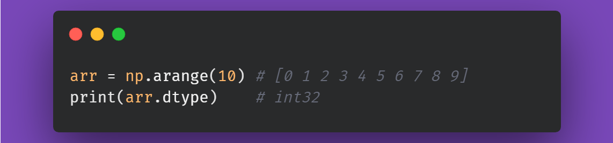
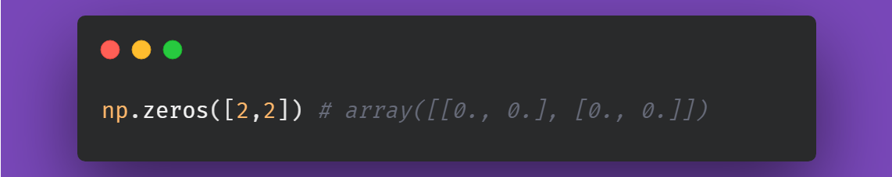

Top 15 most used operations from Numpy
Here are some of the fundamental and the most used operations from Numpy library.
1. np.array() - Numpy arrays
np.array().ndim - Dimensions

np.array().shape - Shape of the array
np.array().T - Transpose the array
np.array().reshape() - Reshape the array
2. Indexing and Slicing
3. np.concatenate() - Concatenate two arrays
4. Stacking
np.stack()
np.hstack()
np.vstack()
5. np.array_split() - Split the array
6. np.arange() - Initiate an array with a range of values
7. np.where() - Find the elements in array matching a condition
8. np.array().astype() - Change the data type of elements of the array
9. np.array().dtype - Check the data type of elements of the array

10. np.random.randint() - Initiate an array with random integers
11. np.random.choice() - Initiate an array by choosing random values from a collection
12. np.random.normal() - Initiate an array with a normal distribution
13. Initiate with constants
np.zeros() - Initiate with zeros

np.ones() - Initiate with ones
np.zeros_like() - Initiate with zeros following the shape of an existing array
14. np.linspace() - Initiate an array with equally spaced values between start and stop
15. Array Operations
These operations are performed on arrays with the same shape.